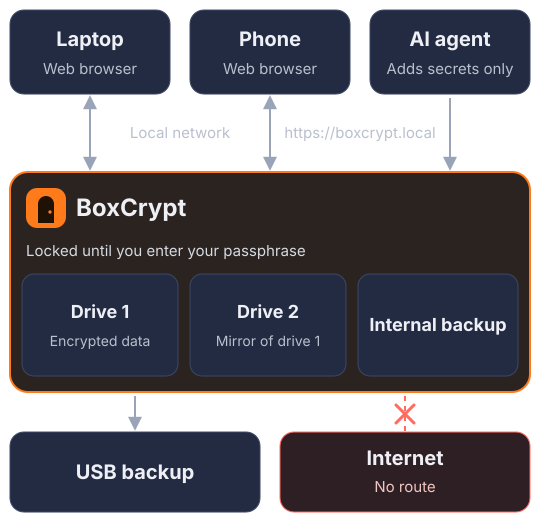

BoxCrypt
BoxCrypt is a computer safe deposit box. Drop files onto the box and they cannot leave. You open them with your passphrase, from a device on your local network. BoxCrypt is an operating system based on NixOS. It runs on a standard computer and has no route to the internet.
What to keep on it
| API keys | Keep the keys for your servers, payment accounts and AI services. An AI agent can add a key. It cannot read a key unless you approve the request. |
|---|---|
| Family documents | Scan passports, birth certificates, wills, deeds and insurance papers. Drop the files onto the box. There is no file size limit. |
| Password manager backups | Export your Bitwarden, 1Password or KeePass vault to a file and drop it onto the box. Many exports are not encrypted. On the box, the file is encrypted. |
How you use it

Design specification
| Base system | NixOS 26.05 |
|---|---|
| Hardware | x86-64 or ARM64 computer with UEFI and 4 GB of RAM or more |
| TPM | TPM 2.0 is recommended. Without a TPM, the device cannot prove that its system has no changes. |
| Network | Ethernet or Wi-Fi. The device name is boxcrypt.local. The device accepts connections from private addresses only. It ignores the DHCP gateway. |
| System | Read-only. dm-verity checks each block when the device reads it. |
| Storage | ZFS mirror across all NVMe and SATA drives |
| Encryption | Each secret is one age file with hybrid post-quantum keys. Standard age tools can decrypt the data. |
| Keys | Keys stay in RAM while the device is unlocked. A restart locks the device. |
| Files | No size limit. Available disk space is the only limit. |
| Backup | Encrypted copies on an internal drive and on a USB drive. You can restore a backup on different hardware. |
| Interfaces | The device operates without a screen. The main interface is a web interface on the local network. A text interface is available over SSH or on a connected screen. |
Limits
- The device has no secure element and no tamper detection.
- An attacker with kernel access can change the firewall until the next restart. Block the device at your router.
- Do not forward a router port to the device.
- If you lose the passphrase and the recovery key, you cannot recover the data.
Support the project
| Lightning | nullr@lnzap.org |
|---|